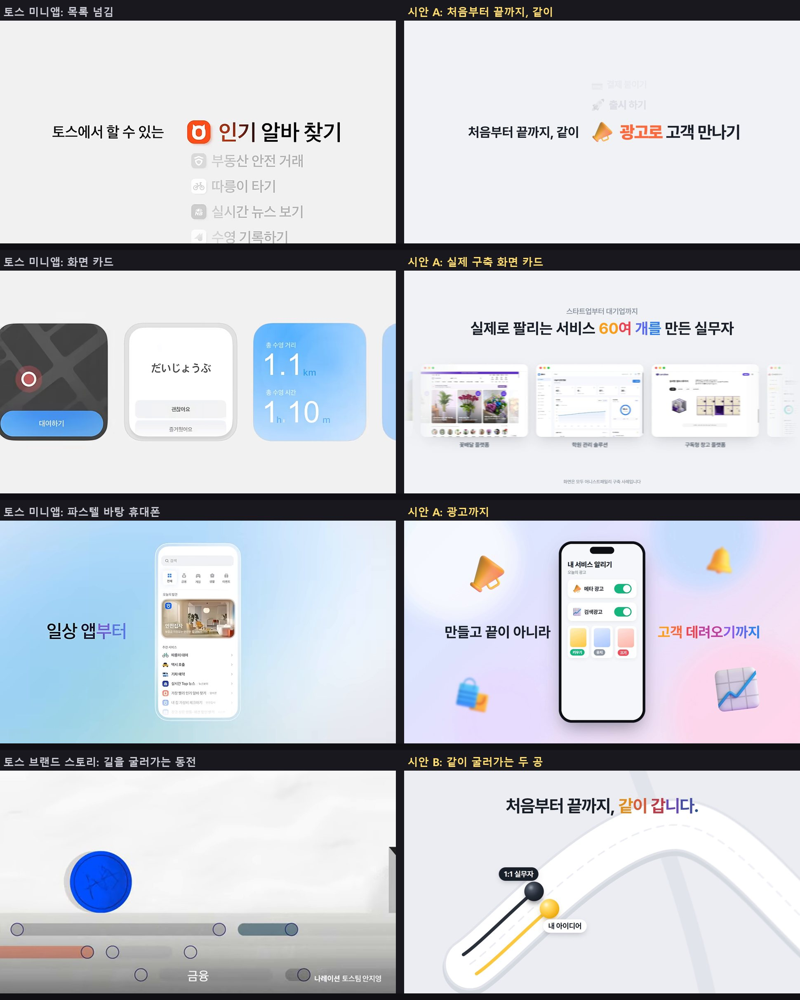

시안 A. 끝까지 같이 하는 일들
새 시안25초, 가로 1920x1080'처음부터 끝까지, 같이' 옆에서 아이디어 정리하기, 기획서 쓰기, 화면 설계, 디자인, 기능, 오류 잡기, 결제, 출시, 광고까지 아홉 가지 일이 목록처럼 넘어갑니다. 토스 미니앱 광고의 목록 넘김 문법입니다.
'AI 부트캠프 1:1 제작 동행' 위에 '아이디어 한 줄부터, 판매까지.'가 떠오릅니다.
'스타트업부터 대기업까지, 실제로 팔리는 서비스 60여 개를 만든 실무자'와 함께 실제 구축 화면 카드가 흘러갑니다.
'막히는 순간에도, 끝까지.' 1:1 실무자 대화(결제 붙이다가 또 막혔어요, 원인 찾았어요, 같이 고쳐볼게요)와 출시까지 100%.
'만들고 끝이 아니라 고객 데려오기까지' 사이 휴대폰에서 메타 광고와 검색광고를 켜고 소재를 키우기, 유지, 끄기로 나눕니다.
'처음부터 끝까지, 같이 만드는 내 아이디어를, 판매할 수 있는 진짜 서비스로.'와 로고, 주소로 끝납니다.
시안 B. 같이 굴러가는 길
새 시안26초, 가로 1920x1080참고: 토스 브랜드 스토리 (동전이 길을 따라 굴러가는 첫 장면)
'내 아이디어'와 '1:1 실무자' 두 공이 나란히 출발하고 '처음부터 끝까지, 같이 갑니다.'가 뜹니다.
화면이 멀리 빠지며 기획, 설계, 디자인, 개발, 출시, 광고까지 전체 길이 보이고 '아이디어 한 줄부터 판매까지, AI 부트캠프 1:1 제작 동행'.
'스타트업부터 대기업까지, 60여 개를 만든 실무자가', '기획부터 디자인까지, 매 단계 옆에서'. 기획서, 화면 설계, 실제 디자인 화면이 길가에 떠오릅니다.
혼자 먼저 간 공이 '개발' 앞 공사 벽에 막히고, 실무자 공이 와서 같이 밀어 벽을 부숩니다. '혼자라면 멈췄을 구간도, 같이 넘어갑니다'.
배포 완료 화면과 '출시까지, 끝까지', 광고 휴대폰과 '만들고 끝이 아니라, 고객을 데려오는 광고까지'.
도착 깃발 뒤 다시 멀리 빠지면 두 공이 남긴 노란 선과 검은 선이 처음부터 끝까지 나란히 이어져 있습니다. '처음부터 끝까지, 같이.'와 로고.
- 두 시안 모두 첫 프레임에 '처음부터 끝까지, 같이'가 바로 나옵니다.
- 굵고 큰 글자, 형광펜, 색 덩어리 배경을 버리고 토스 광고처럼 밝은 회색 바탕, 가운데 한 줄 문장, 한 단어씩 흐리게 떠올라 또렷해지는 글자, 글자마다 번지는 색, 입체 아이콘, 화면 카드 위주로 다시 만들었습니다.
- 빠르게 움직이는 장면에 움직임 번짐(모션 블러)을 넣어 끊기지 않고 부드럽게 보이게 했습니다.

이전 시안
앞서 만든 시안입니다. 비교용으로 남겨 두었습니다.
1안 두 번째 시안. 90%에서 멈추지 마세요
30초'화면이 90%인 것과 서비스가 90%인 것은 다르다'로 묶었던 두 번째 시안입니다.
1안. 실제 서비스 화면과 큰 글자
30초입력창에 아이디어를 치는 장면으로 시작해, 혼자 막히는 세 가지 고민, 기획에서 배포까지 다섯 단계의 실제 결과물, 어니스트패밀리가 만든 서비스 화면 모음, 광고 운영, 마지막 상담 안내로 이어집니다. 노란 형광펜 띠가 장면을 넘깁니다.
Base44, Your ideas, your appsLovable, Growth Tools 발표무신사, 무진장 여름 블랙 프라이데이카카오뱅크, AI 목표적금 출시
2안. 선 그림 일러스트
24초퇴근 후 아이디어를 떠올린 사람, 생각 풍선 속 서비스 스케치, 같은 자리만 맴도는 빨간 선, 다섯 단계를 함께 걷는 두 사람을 펜 선이 그려지는 방식으로 보여주고, 노트북에 그린 스케치가 실제 서비스 화면으로 바뀌며 끝납니다.
토스, 결제의 새 얼굴, FacePay토스, 당신의 숨은 보험금은?Anthropic, Turning Claude into your thinking partner샤이니바이브, Claude Code로 만든 가상 광고 '착'
3안. 글자만으로 15초
15초노랑과 검정 바탕에 굵은 글자만 0.4~1초 간격으로 바꿉니다. '아이디어 있는데, 개발자가 없다면?'에서 다섯 단계, 1:1, 60여 개로 이어지고 '진짜 서비스로.'에서 끝납니다. 아래 띠 글자가 계속 흐릅니다.
Frantic, London Northwestern Railway TV 광고무신사, 무진장 여름 블랙 프라이데이Linear, Introducing Linear ReleasesOptious, 키네틱 타이포 브랜드 영상
어떻게 만들었고, 어떻게 고치나
- 장면은 HTML과 CSS로 짜고, 시간에 따라 글자와 화면이 움직이게 했습니다. 크롬으로 한 장씩(초당 30장) 찍어 FFmpeg로 MP4를 만들었습니다. HyperFrames와 같은 원리이고, 유료 라이선스가 필요한 도구는 쓰지 않았습니다.
- 원본 코드는 저장소의 videos/src 폴더에 있습니다. 새 시안은
ad2a.html,ad2b.html, 이전 시안은ad1b.html,plan1.html,plan2.html,plan3.html한 파일씩이고, 문구와 시간(초)이 파일 안에 그대로 적혀 있어 Claude Code에 '이 문장을 바꿔줘', '이 장면을 1초 늘려줘'처럼 요청하면 됩니다. - 다시 뽑을 때는
python render.py blur 5 ad2a:h처럼 실행합니다. 5는 움직임 번짐을 만들려고 한 프레임마다 찍는 장 수입니다(파이썬 Playwright, 설치된 크롬, FFmpeg 필요). 글꼴 파일(Pretendard, 에스코어 드림)은 홈페이지 프론트 저장소의 public/renewal/assets, public/fonts 에서 assets 폴더로 복사해 씁니다. - 광고로 올리기 전에 배경음악, 마지막 장면의 상담 버튼 문구, 연결 주소의 광고 추적 값(utm)을 정합니다.